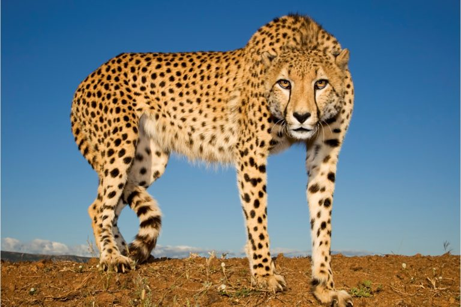
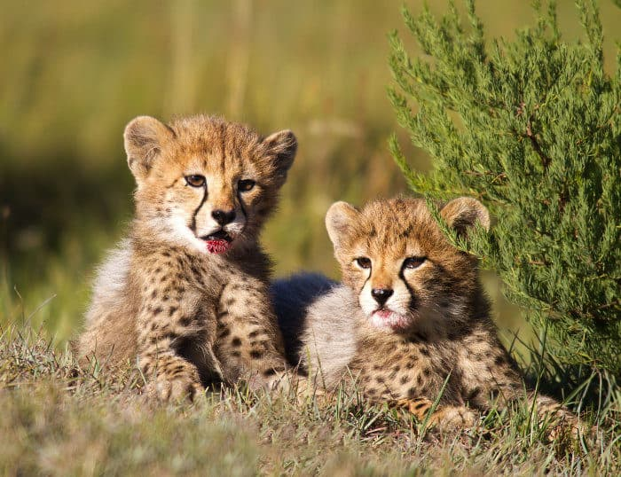
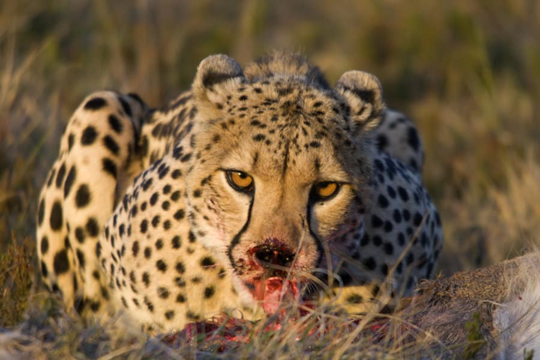
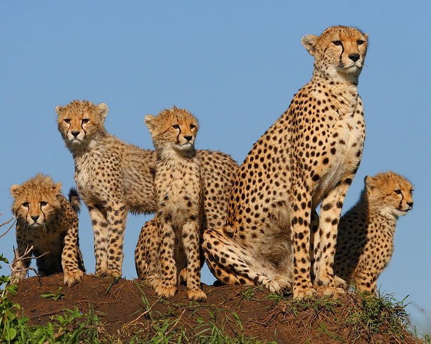

Welcome Cheetahs to India

The cheetah is a large cat native to Africa and central Iran. It is the fastest land animal, estimated to be capable of running at 80 to 128 km/h with the fastest reliably recorded speeds being 93 and 98 km/h, and as such has several adaptations for speed, including a light build, long thin legs and a long tail.

Cheetah females have a gestation period of 92-95 days; and will give birth to a litter of approximately three or five cubs, the cubs weighing in at around 250 grams at birth.

Cheetah eat small antelope, including springbok, steenbok, duikers, impala and gazelles, as well as the young of larger animals, such as warthogs, kudu, hartebeest, oryx, roan and sable

In 2016, the global cheetah population was estimated at 7,100 individuals in the wild; it is listed as Vulnerable on the IUCN Red List.